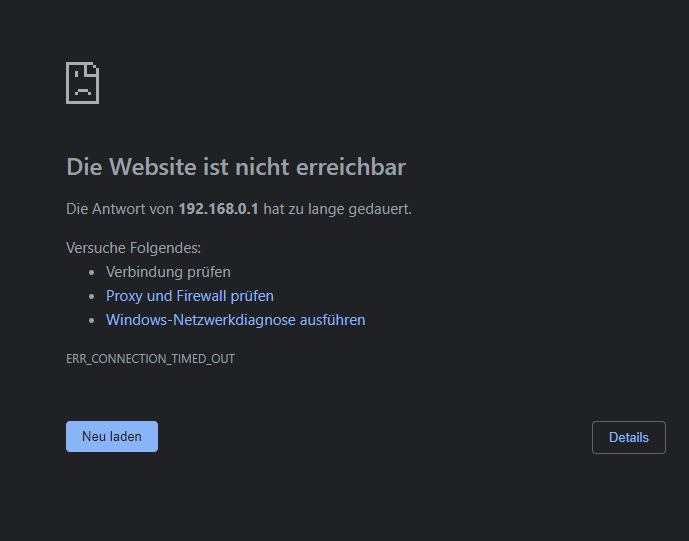
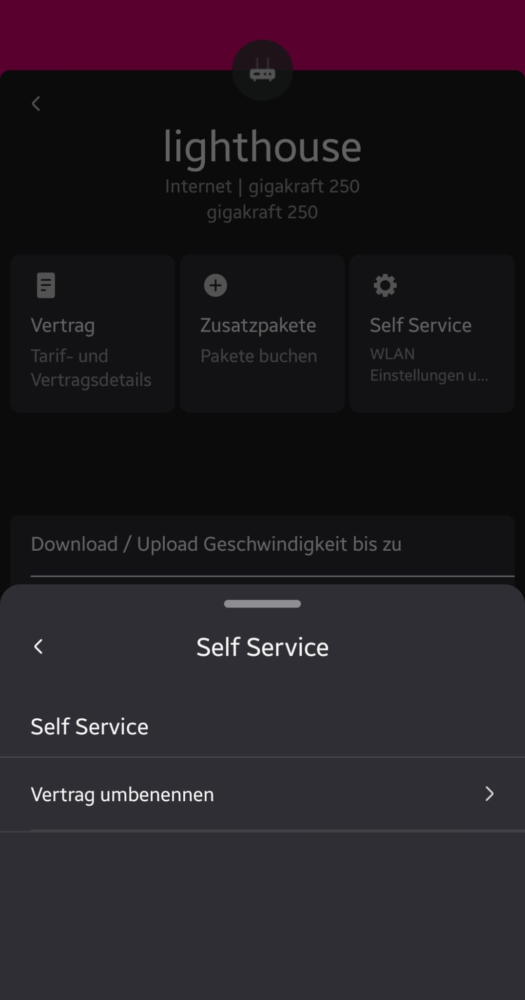

Hallo,
heute war ein Techniker da und hat das Internet (gaming 300) eingerichtet. Nun wollte ich auf die Konfigurationsseite (192.168.0.1) zugreifen, leider vergeblich.
Liegt das Probleme vielleicht direkt bei Magenta?
Router: Home Fiber Box
Weiß da jemand weiter?

Bearbeitet von sandroschuetz
Hey
@sandroschuetz
Die neue Home Box Fiber hat keine Konfigurationsseite. Die derzeit einzige Möglichkeit irgendwelche Einstellungen auf der Home Box Fiber zu ändern ist über die Mein Magenta App. In der App können aber nur wenige Einstellungen in Bezug auf das W-Lan geändert werden.
Anleitungen zur Home Box Fiber sind hier zu finden: Hardware-Support
Eine andere Box mit mehr Einstellungsmöglichkeiten (in diesem Tarif die Fiber Box 2) sollte über den Kundenservice angefordert werden können.
LG NTM
@NTM Ok danke mal für die Info.
Welche Vorteile hab ich generell mit der Home Box Fiber gegenüber der Fiber Box 2? Oder ist die Fiber Box 2 von Haus aus besser?
Eine weitere Frage: Kann ich prinzipiell ein Mesh System einer externen Firma einbinden? Mann muss ja glaub ich das Wlan des Modems irgendwie aktivieren?
Bearbeitet von sandroschuetzvor 1 Stunde schrieb sandroschuetz:Welche Vorteile hab ich generell mit der Home Box Fiber gegenüber der Fiber Box 2? Oder ist die Fiber Box 2 von Haus aus besser?
Die Home Box Fiber hat ein aktuelleres W-Lan mit WiFi 6 statt WiFi 5 (802.11 ax zusätzlich zu 801.11 a/b/g/n/ac), welches höhere Bandbreiten ermöglicht, sowie die Reichweite Indoor etwas verbessert (kompatible Geräte mit WiFi 6 oder 6E vorausgesetzt). Außerdem hat die neue Box einen 2,5 Gbit/s Lan Port, welcher sich aber nur beim gigakraft 1000 bemerkbar macht, da nur mit diesem der volle gigabit auf einem Gerät genutzt werden kann (Gerät mit 2,5 Gbit/s Lan Port, oder höher mit 2,5 Gbit/s Modus, vorausgesetzt).
vor 1 Stunde schrieb sandroschuetz:Eine weitere Frage: Kann ich prinzipiell ein Mesh System einer externen Firma einbinden? Mann muss ja glaub ich das Wlan des Modems irgendwie aktivieren?
Ja wäre möglich. Das W-Lan der Home Box Fiber lässt sich über die Wi-Fi Taste vorne deaktivieren.
ich habe mir nun die app runter geladen und mich bereits geärgert dass offenbar keine konfiguration über den pc möglich ist, jetzt wollte ich ssid und passwort ändernr aber unter self service wird mir nur vertrag umbenennen angeboten 
Am 18.11.2022 um 22:06 schrieb otschi:ich habe mir nun die app runter geladen und mich bereits geärgert dass offenbar keine konfiguration über den pc möglich ist, jetzt wollte ich ssid und passwort ändernr aber unter self service wird mir nur vertrag umbenennen angeboten
Das gleiche Problem bei mir, es klappt auch vieles anderes nicht, leider Vertrag geändert, auf Grund des erzwungenen TV-Box Wechsel......
Am 18.11.2022 um 22:06 schrieb otschi:
Du hast vermutlich einen Login mit deiner bereits älteren Registrierung vorgenommen. Bitte registriere dich mit deiner neuen Kundennummer (1.2XXXXXXXXX) hier . Nutze dabei eine andere E-Mailadresse, als die die du bisher genutzt hast. Bitte aber auch keine *@chello.at-Adresse nutzen. Sobald die Registrierung erfolgt ist, logge dich ein und füge deinen Kabelvertrag hinzu - alles am besten über einen Browser am PC oder Laptop. Danach Logge dich in deiner App am Handy aus und mit den neuen Daten ein. Danach sollten die Änderungen am Modem möglich sein. LG JD.
Ich habe das gleiche Problem. Neues Modem mit den gleichen Vertragsdaten bekommen und habe auch nur bei Slef Service "Vertrag umbenennen" stehen.
Ich finde es eine Frechheit dass man mit der IP Adresse nicht mehr in das Modemmenü kommt. MAGENTA WAS SOLL DAS ??
Seht mal hier:
{kind=link}